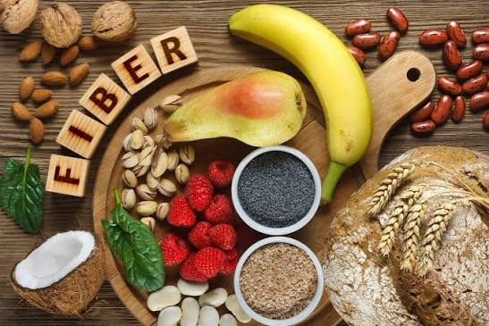
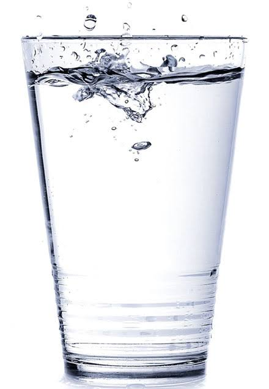
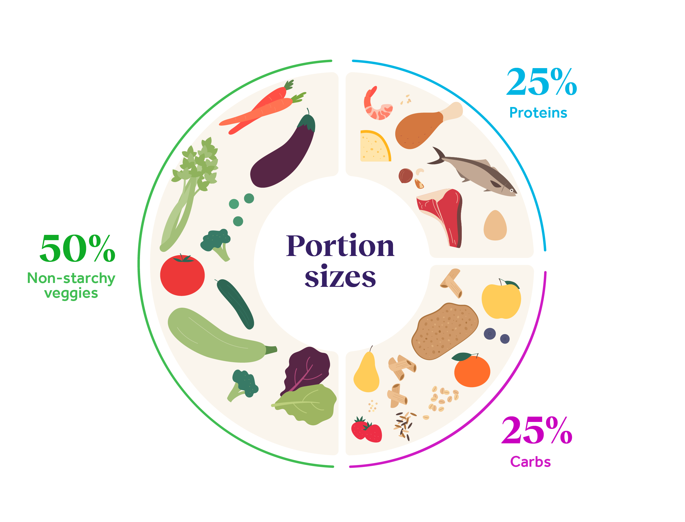
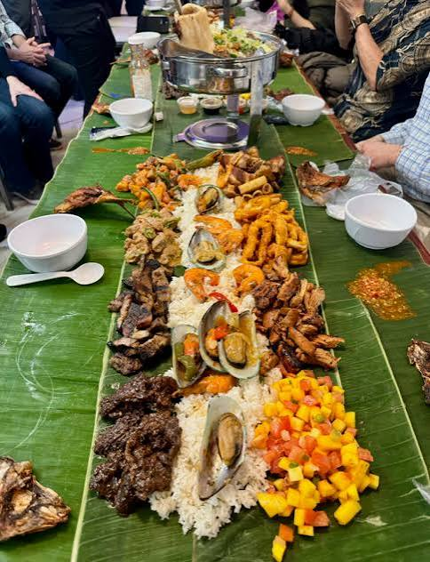
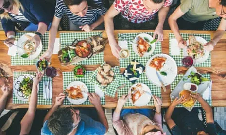
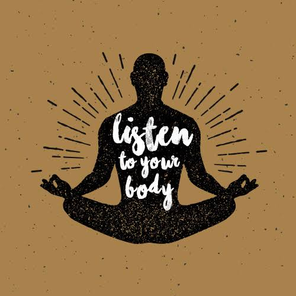

Helpful Food Advice
Even though social media sometimes gives poor advice, some of it can be accurate or helpful. For example, people share advice on eating healthily on a budget, meal-prepping for the week, and cooking healthy, delicious recipes. Some professional nutritionists also share advice backed by science and research.
Rather than recommend specific influencers, here are some generally useful food habits:
Everyday Healthy Habits
- Eat more fibre

- Stay hydrated

- Eat in moderation

- Try something new

- Eat what makes you feel good

- Listen to your body

- Seek out reliable sources of information
We all need food to survive. Food helps us grow, stay healthy, and have energy. Food isn't our enemy and shouldn't be treated as such.